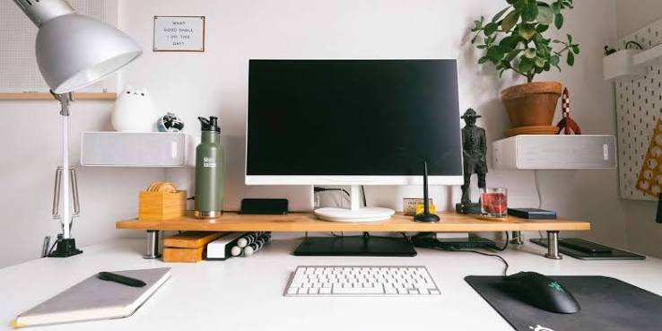

Môj pracovný stôl
Tu vznikajú školské projekty aj vlastné nápady. Prejdite myšou po bodoch na obrázku alebo na ne ťuknite a zobrazí sa popis.
Čo mám na stole

Ťuknite na oranžový bod na obrázku a tu sa zobrazí jeho popis.
Zdroj fotografie: MakeUseOf
Moje pracovné zásady
- Najprv malá funkčná verzia, potom vylepšovanie.
- Čo sa opakuje, to zautomatizujem.
- Kód, ktorému nerozumiem, do projektu nepatrí, ani keď ho napísala AI.